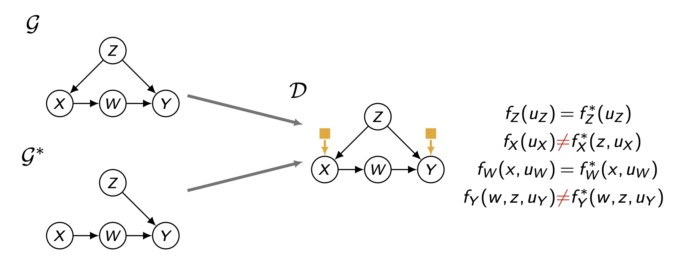
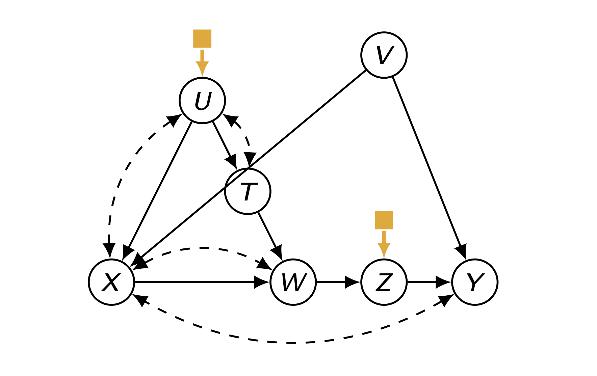

1. Introduction: Moving from Lab to Real-World
데이터 과학과 인과 추론에서 가장 빈번하면서도 어려운 질문 중 하나는 “어떤 환경(Source)에서 얻은 지식을 다른 환경(Target)에 적용할 수 있는가?”입니다.
예를 들어:
- 미국의 교육 정책 효과를 한국에 그대로 적용할 수 있는가?
- LA에서 수행된 임상 시험 결과를 NYC의 환자들에게 적용할 수 있는가?
- 통제된 실험실 환경(Lab)의 로봇 학습 데이터를 실제 도로(Real-World)에 쓸 수 있는가?
이 문제는 사회과학에서는 외부 타당성(External Validity), 통계학에서는 일반화(Generalizability), 머신러닝에서는 도메인 적응(Domain Adaptation) 등으로 불려왔습니다.
Causal Data Science는 이 문제를 Transportability(이송 가능성)라는 수학적 프레임워크로 정의하고, Selection Diagram이라는 도구를 통해 데이터가 언제, 어떻게 이송 가능한지를 공식화합니다.
2. The Transportability Problem
- 우리의 목표는 Source Domain(\(\Pi\))에서 수집된 관찰(\(P\)) 및 실험(\(P(y|do(x))\)) 데이터를 사용하여, Target Domain(\(\Pi^*\))에서의 인과 효과 \(Q = P^*(y|do(x))\)를 계산하는 것입니다.
2.1. Trivial vs. Non-Trivial Cases
가장 단순한 가정(\(H_0\))은 Source와 Target의 모든 조건이 동일하다는 것입니다.
이 경우 결과는 자명하게 이식 가능합니다(Trivially Transportable).
하지만 현실(\(H_a\))에서는 두 도메인 간에 차이가 존재합니다.
- 분포의 차이: \(f_z \neq f^*_z\) (예: LA와 NYC의 연령 분포가 다름)
- 메커니즘의 차이: \(f_y \neq f^*_y\) (예: 동일한 치료제라도 인종적 특성에 따라 반응률이 다름)

- 위 그림(Figure 1)은 Source와 Target 사이에 구조적 불일치가 존재할 때, 단순한 데이터 결합이 불가능함을 보여줍니다.
3. Selection Diagrams: Encoding Differences
- 도메인 간의 차이를 체계적으로 표현하기 위해 Pearl과 Bareinboim은 Selection Diagram을 도입했습니다.
Definition
- Selection Diagram은 기존의 Causal Graph \(G\)에 Selection Node (\(S\))를 추가한 확장된 그래프입니다.
- Selection Node (Yellow Square): 특정 변수의 메커니즘이 도메인 간에 차이가 있음을 나타냅니다.
- 만약 변수 \(V\)에 대해 \(f_V \neq f^*_V\)라면, \(S \to V\) 화살표를 추가합니다.
- 반대로, \(S\)가 가리키지 않는 변수는 도메인 간에 메커니즘이 동일(Invariant)하다고 가정합니다.

4. Deriving Transport Formulas
- Selection Diagram을 사용하면, 타겟 도메인의 데이터를 사용하지 않고도(혹은 일부만 사용하여) 타겟의 인과 효과를 계산하는 Transport Formula를 유도할 수 있습니다.
4.1. The General Theorem: Reduction to Calculus
- Pearl & Bareinboim은 Transportability 문제를 해결하기 위한 일반적인 정리를 제시했습니다.
Theorem: A causal relation \(Q\) is transportable from \(\Pi\) to \(\Pi^*\) if and only if there exists a do-calculus reduction of \(Q(\Pi^*)\) to an estimand that is a function of the observed distributions.
즉, 타겟 도메인의 인과 효과 \(Q\)가 관측 가능한 분포들의 함수로 변환(Reduction)될 수 있을 때만, 해당 효과는 이전(Transportable) 가능합니다.

Derivation Step-by-Step
위의 그래프(DAG)는 Selection Node(■)가 \(Z\)에만 영향을 미치고(\(S \to Z\)), \(Z \to W \to Y\)의 경로를 가지는 상황을 보여줍니다.
이 경우 타겟 도메인의 효과 \(P^*(y|do(x))\)는 다음과 같이 유도됩니다.
- Definition of Target Quantity:
- 타겟 도메인(\(\Pi^*\))에서의 효과는 Selection Node(\(S\))가 켜진 조건부 확률(\(S=\blacksquare\))과 같습니다. \[Q = P^*(y|do(x)) = P(y|do(x), S)\]
- Probability Axioms (Conditioning on W):
- 중간 변수 \(W\)에 대해 전체 확률의 법칙을 적용합니다. \[= \sum_{w} P(y|do(x), S, w)P(w|do(x), S)\]
- Rule 1 & Graph Properties (Removal of S):
- 그래프에서 \(W\)가 주어졌을 때, \(Y\)는 Selection Node(\(S\))와 분리(d-separated)됩니다(\(S \to Z \to W \to Y\)).
- 따라서 첫 번째 항에서 \(S\)를 제거할 수 있습니다. \[= \sum_{w} P(y|do(x), w)P(w|do(x), S)\]
- Rule 3 (Removal of do(x)):
- \(X\)에 대한 개입(\(do(x)\))은 \(W\)에 영향을 주지 않습니다(그래프상 \(X\)와 \(W\) 사이의 경로는 \(Z\)를 통하거나 교란 경로뿐인데, 개입 시 차단됨).
- 따라서 두 번째 항에서 \(do(x)\)를 제거할 수 있습니다. \[= \sum_{w} P(y|do(x), w)P(w|S)\]
- Final Transport Formula:
- \(P(w|S)\)는 타겟 도메인에서의 \(W\) 분포인 \(P^*(w)\)와 같습니다. \[= \sum_{w} P(y|do(x), w)P^*(w)\]
해석: 이 식은 타겟 도메인에서 \(Y\)나 \(Z\)에 대한 실험을 할 필요 없이, 소스 도메인의 실험 결과(\(P(y|do(x), w)\))와 타겟 도메인의 관측 데이터(\(P^*(w)\))만 결합하면 타겟의 인과 효과를 계산할 수 있음을 보여줍니다.
4.2. Specific Cases derived from Graph Structure
- 이제 그래프 구조(Causal Story)에 따라 공식이 어떻게 달라지는지 구체적인 세 가지 사례를 살펴보겠습니다.

Case (a): Z represents Age (Confounder)
- Scenario: \(Z\)(나이)는 \(X\)(치료)와 \(Y\)(결과) 모두에 영향을 미치는 교란 요인입니다. 나이 분포(\(P(z)\))는 도메인마다 다릅니다(\(S \to Z\)).
- Formula: \[P^*(y|do(x)) = \sum_{z} P(y|do(x), z) P^*(z)\]
- Interpretation: Source에서 \(Z\)별 인과 효과(\(P(y|do(x),z)\))를 구한 뒤, 이를 Target의 나이 분포(\(P^*(z)\))에 맞춰 가중 평균(Re-weighting)합니다. 이것이 표준적인 Adjustment Formula입니다.
Case (b): Z represents Language Skill (Proxy)
- Scenario: \(Z\)(언어 능력)는 \(Y\)의 결과물일 뿐, \(X\)나 \(Y\)의 원인이 아닙니다. \(Z\)의 메커니즘이 도메인마다 다릅니다.
- Formula: \[P^*(y|do(x)) = P(y|do(x))\]
- Interpretation: \(Z\)는 인과 경로에 개입하지 않으므로, \(Z\)의 차이는 \(X \to Y\) 효과에 영향을 주지 않습니다. 즉, Source의 결과를 그대로 Target에 적용할 수 있습니다.
Case (c): Z represents Bio-marker (Mediator)
- Scenario: \(Z\)는 \(X\)와 \(Y\) 사이의 매개 변수입니다. \(X\)가 \(Z\)에 미치는 영향은 동일하지만, \(Z\)의 기저 분포나 측정 방식이 다를 수 있습니다(\(S \to Z\)).
- Formula: \[P^*(y|do(x)) = \sum_{z} P(y|do(x), z) P^*(z|x)\]
- Interpretation: \(X \to Z\) 메커니즘이 다르다면, Target 도메인에서의 조건부 확률 \(P^*(z|x)\) 정보를 사용하여 보정해야 합니다.
5. Algorithm to Determine if an Effect is Transportable
- 지금까지 살펴본 사례들은 비교적 단순한 구조였지만, 현실의 인과 그래프는 훨씬 복잡할 수 있습니다.
- Pearl & Bareinboim은 임의의 그래프 구조에 대해 Transportability를 판단하고 공식을 도출하는 일반화된 알고리즘을 제시했습니다.

5.1. Input & Output
- INPUT: Selection Node(노란색 사각형, \(\blacksquare\))가 표시된 인과 그래프(Annotated Causal Graph).
- OUTPUT:
- 판단(Decision): 타겟 도메인의 인과 효과 \(P^*(y|do(x))\)가 이전을 통해 식별 가능한가(Transportable)?
- 공식(Formula): 식별 가능하다면, 다음 두 가지 데이터를 결합한 수식:
- 소스 도메인의 실험 데이터 (Measurements from Source experiments)
- 타겟 도메인의 관측 데이터 (Measurements from Target observations)
5.2. The Logic: Handling Non-Identifiable Factors
- 이 알고리즘의 핵심은 전체 문제를 Q-factor(C-component) 단위로 쪼개고, 각 조각을 어디서 가져올지 결정하는 것입니다.
Key Logic: “Any \(Q\)-factors non-identifiable from \(P^*(\mathbf{V})\) should be identified from experiments in the source domain. This corresponds to checking no \(\blacksquare\) points to the variables in the non-identified \(Q\)-factor!”
- Target Priority:
- 먼저 타겟 도메인의 관측 데이터 \(P^*(\mathbf{V})\)만으로 계산 가능한 요소인지 확인합니다. 가능하다면 \(P^*\)를 그대로 사용합니다.
- Source Fallback:
- 타겟 데이터만으로 식별 불가능한(Non-identifiable) 요소가 있다면, 소스 도메인의 실험 결과(\(P(v|do(x))\))를 가져와야 합니다.
- Transportability Condition:
- 이때 소스 데이터를 가져오기 위해서는 “해당 요소에 영향을 주는 Selection Node(\(\blacksquare\))가 없어야 한다”는 조건이 붙습니다.
- 만약 Selection Node가 가리키고 있다면, 메커니즘이 다르다는 뜻이므로 소스 데이터를 타겟에 대입할 수 없습니다. (즉, Transportable 하지 않음)
5.3. Derivation Example
- 하단의 수식은 이 알고리즘을 적용한 결과입니다. 그래프의 각 부분(변수)이 어떻게 처리되었는지 분석해 봅시다.
\[ P^*(y|do(x)) = \sum_{z} P(y|do(x),z) \sum_{w} P^*(z|w) \sum_{t} P(w|do(x),t)P^*(t) \]
이 식은 크게 네 부분으로 나뉩니다.
- \(P^*(t)\) (Target Data):
- 변수 \(T\)에는 Selection Node가 없습니다. 또한 \(T\)는 외생 변수이므로 타겟 도메인의 분포를 그대로 사용합니다.
- \(P(w|do(x),t)\) (Source Experiment):
- 변수 \(W\)를 구하는 부분입니다. \(W\)에는 직접적인 Selection Node가 붙어있지 않으므로, 소스 도메인의 실험 결과(\(X\)에 개입했을 때의 \(W\))를 가져와서 사용합니다.
- \(P^*(z|w)\) (Target Observation):
- 변수 \(Z\)에는 Selection Node(\(\blacksquare \to Z\))가 붙어 있습니다. 즉, 소스와 타겟 간에 메커니즘 차이가 있습니다.
- 따라서 소스 데이터를 쓰면 안 됩니다. 다행히 \(Z\)는 \(W\)가 주어졌을 때 타겟 도메인의 관측 데이터(\(P^*\))만으로 식별이 가능하므로, \(P^*(z|w)\)를 직접 측정하여 사용합니다.
- \(P(y|do(x),z)\) (Source Experiment):
- 결과 변수 \(Y\)에는 Selection Node가 없습니다. 따라서 소스 도메인에서 \(X\)에 개입했을 때 \(Z\)에 따른 \(Y\)의 반응을 측정한 실험 데이터를 그대로 가져옵니다.
결론:
- 이 공식은 타겟 도메인에서 직접 실험을 하지 않고도(\(do(x)\) in Target), 소스의 실험 결과(1, 4번 항)와 타겟의 관측 결과(2, 3번 항)를 정교하게 조립하여 타겟의 인과 효과를 계산해 낸 것입니다.
6. General Transportability: Data Fusion from Multiple Domains
- 가장 복잡하면서도 강력한 시나리오는, 단일 소스만으로는 문제를 해결할 수 없고 여러 소스 도메인(\(\Pi^a, \Pi^b, \dots\))의 데이터를 결합(Data Fusion)해야만 타겟(\(\Pi^*\))을 추론할 수 있는 경우입니다.
Motivation: The LA & NYC Example
- Goal: 타겟 도메인(Target)에서의 인과 효과 \(Q = P^*(y|do(x))\)를 구하고 싶습니다.
- Problem: 그 어떤 도메인도 타겟과 완벽하게 일치하지 않습니다.
- Source A (LA, \(\Pi^a\)): \(X\)와 \(Y\)에 Selection Node(\(\blacksquare\))가 있습니다. 즉, \(Y\)가 생성되는 메커니즘이 타겟과 다릅니다. (하지만 \(Z\)는 타겟과 동일)
- Source B (NYC, \(\Pi^b\)): \(X\)와 \(Z\)에 Selection Node(\(\blacksquare\))가 있습니다. 즉, \(Z\)가 생성되는 메커니즘이 타겟과 다릅니다. (하지만 \(Y\)는 타겟과 동일)

Derivation Steps (Reduced to Calculus)
- 우리는 do-calculus와 확률의 법칙을 사용하여, 타겟 쿼리를 각 소스 도메인에서 식별 가능한(Transportable) 부분들로 분해하고 매핑합니다.
Definition & Axioms (Decomposition): 먼저 타겟의 Selection Node 집합(\(\blacksquare_{xzy}\))을 조건부에 포함시킨 뒤, \(Z\)에 대해 전체 확률의 법칙을 적용합니다. \[Q = P^*(y|do(x)) = P(y|do(x), \blacksquare_{xzy})\] \[= \sum_{z} P(y|do(x), z, \blacksquare_{xzy}) P(z|do(x), \blacksquare_{xzy})\]
Rule 2 (Action/Observation Exchange): 첫 번째 항에서 \(Z\)가 \(X \to Y\) 경로를 차단하므로, 관측된 \(z\)를 개입 \(do(z)\)로 바꿀 수 있습니다. \[= \sum_{z} P(y|do(x), do(z), \blacksquare_{xzy}) P(z|do(x), \blacksquare_{xzy})\]
Rule 3 (Deletion of Action): 첫 번째 항에서 \(Z\)를 고정(\(do(z)\))하면 \(X\)가 \(Y\)에 미치는 영향은 사라집니다. 따라서 \(do(x)\)를 제거합니다. \[= \sum_{z} P(y|do(z), \blacksquare_{xzy}) P(z|do(x), \blacksquare_{xzy})\]
Rule 1 (Removal of Irrelevant Selection Nodes)
논리: “이 변수(\(Y\) 또는 \(Z\))를 결정하는 데 있어, 관련 없는 Selection Node는 지울 수 있다.” (d-separation)
(Term 1) \(Y\)에 대한 분석:
- \(Y\)는 \(Z\)가 주어졌을 때, \(Z\)나 \(X\)에 붙은 Selection Node(\(\blacksquare_z, \blacksquare_x\))와는 독립적입니다. (그래프상 \(Y\)로 오는 화살표가 없음)
- 따라서 \(\blacksquare_y\)만 남기고 나머지는 지웁니다. \[P(y|do(z), \blacksquare_{x,z,y}) \xrightarrow{\text{Rule 1}} P(y|do(z), \blacksquare_y)\]
(Term 2) \(Z\)에 대한 분석:
- \(Z\)는 \(X\)가 주어졌을 때, \(Y\)에 붙은 Selection Node(\(\blacksquare_x, \blacksquare_y\))와 독립적입니다.
- 따라서 \(\blacksquare_z\)만 남기고 \(\blacksquare_x, \blacksquare_y\)는 지웁니다. \[P(z|do(x), \blacksquare_{x,z,y}) \xrightarrow{\text{Rule 1}} P(z|do(x), \blacksquare_{z})\]
Definition (Mapping to Sources)
논리: “남아있는 Selection Node 구성과 일치하는 도메인(도시)을 찾아 연결한다.”
(Term 1) \(P(y|do(z), \blacksquare_y)\) 매핑:
- 우리는 \(Y\)에 대한 메커니즘이 타겟과 동일한(즉, \(\blacksquare_y\)가 없는/영향을 안 주는) 도메인을 찾아야 합니다.
- LA (\(\Pi^a\)): \(Y\)에 \(\blacksquare\)가 있음 (Bad).
- NYC (\(\Pi^b\)): \(Y\)에 \(\blacksquare\)가 없음 (Good).
- \(\rightarrow\) 따라서 NYC 데이터(\(P^{(b)}\))를 사용합니다. \[P(y|do(z), \blacksquare_y) \rightarrow P^{(b)}(y|do(z))\]
(Term 2) \(P(z|do(x), \blacksquare_{z,x})\) 매핑:
- 우리는 \(Z\)에 대한 메커니즘이 타겟과 동일한(즉, \(\blacksquare_z\)가 없는) 도메인을 찾아야 합니다.
- NYC (\(\Pi^b\)): \(Z\)에 \(\blacksquare\)가 있음 (Bad).
- LA (\(\Pi^a\)): \(Z\)에 \(\blacksquare\)가 없음 (Good).
- \(\rightarrow\) 따라서 LA 데이터(\(P^{(a)}\))를 사용합니다. \[P(z|do(x), \blacksquare_{z}) \rightarrow P^{(a)}(z|do(x))\]
Final Transport Formula
최종적으로 두 도메인의 데이터를 결합한 공식은 다음과 같습니다.
\[ P^*(y|do(x)) = \sum_{z} \underbrace{P^{(b)}(y|do(z))}_{\text{from NYC}} \underbrace{P^{(a)}(z|do(x))}_{\text{from LA}} \]
- 의미:
- LA 데이터에서는 \(X\)가 \(Z\)에 미치는 효과를 가져옵니다 (\(X \to Z\) 메커니즘 공유).
- NYC 데이터에서는 \(Z\)가 \(Y\)에 미치는 효과를 가져옵니다 (\(Z \to Y\) 메커니즘 공유).
- 이들을 결합함으로써, 그 어떤 도시에서도 수행된 적 없는 전체 실험(\(X \to Y\))의 결과를 정확하게 예측해 낼 수 있습니다.
7. Conclusion: Is the Gold Standard Golden?
- 무작위 대조군 실험(RCT)은 인과 추론의 “Gold Standard”로 여겨집니다.
- 하지만 Transportability 이론은 RCT조차 완벽하지 않음을 시사합니다.

- Lesson: 완벽한 RCT 데이터가 있더라도, 모집단 간의 차이(Selection Node)가 존재한다면 반드시 Transportability Exercise를 거쳐야 합니다.
- Completeness: 다행히도, Selection Diagram과 do-calculus를 이용한 이송 알고리즘은 완전(Complete)합니다. 즉, 이 방법으로 이송 공식을 유도할 수 없다면, 해당 데이터만으로는 이론적으로 타겟 효과를 식별할 수 없음이 증명된 것입니다.